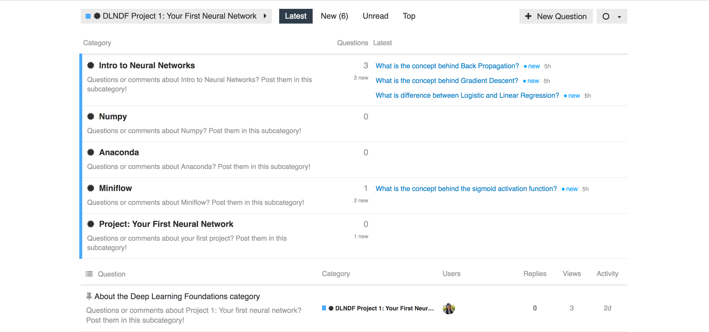
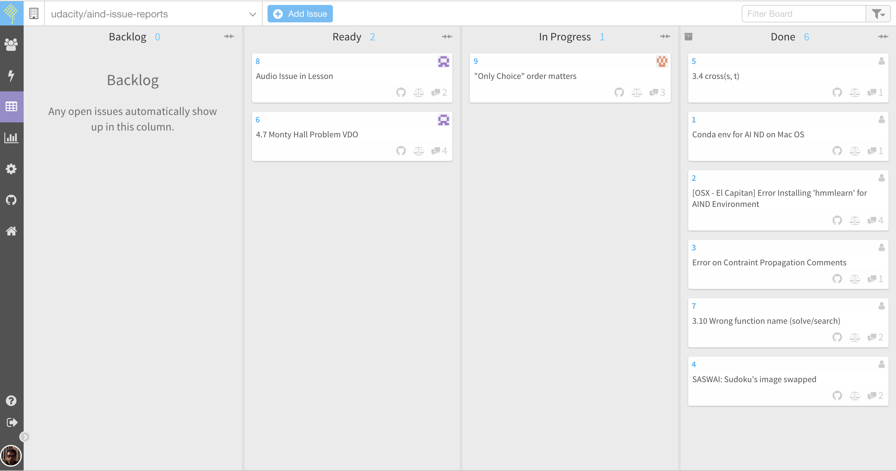

The forums are a great place to ask in-depth and technical questions. Questions in the forums will be answered by both our trained forum mentors and other students. Make sure to like answers as you read them, and feel free to post answers yourself!
We will be using Discourse for the forums, and you should be able to access these forums anytime by following the forum link on the left hand side of the classroom. Once you are there, check out the different categories and subcategories, and post a question if you have one!
Slack is the best place for live discussion and interaction with your community of students. If you haven't joined already, you can sign up here. Here are the main channels you will be able to take advantage of:

For each project you submit, you will receive detailed feedback from a project Reviewer.
Sometimes, a reviewer might ask you to resubmit a project to meet specifications. In that case, an indication of needed changes will also be provided. Note that you can submit a project as many times as needed to pass.

In order to keep our content up-to-date and address issues quickly, we've set up a Waffle board to track error reports and suggestions.
If you find an error, check there to see if it has already been filed. If it hasn't, you can file an issue by clicking on the "Add issue" button, adding a title, and entering a description in the details (you will need a GitHub account for this). Also, please make sure to document exactly where the issue occurs (section, lesson, and node) if it occurs in the classroom.
Links and screenshots, if available, are always appreciated!
